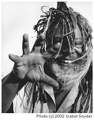

GEORGE CLINTON Links: Official Website Biography Tourdates Press: SignOnSanDiego Video Interview 9-02 PopMatters Concert Review 9-02 Rolling Stone Dope Dogs Review Sythesis.net Interview Download high res images here: Color Photo #1 B&W Photo #1 Download Show Flyers Here |
|
It has been said that when Funk Founder and Atomic Dawg Architect George Clinton starts making sense, you know the end draweth near. (After our interview I found that even if he doesn’t make sense, Clinton always provides his audience a good show.) His funk formidability is present in every word he speaks. Conversing with The Funky One, you are constantly reminded that he’s from an entirely different world than you and anyone you’ve ever met. The vernacular of choice is as unique to the musical icon as is his garb, which on a typical day might consist of a pair of ratty basketball shoes, ‘80s-esce parachute pants, a hockey jersey, and his hallmark: a multicolored and textured headdress that could force a peacock into an intense rage of jealousy. In 1999, the airwaves—at least shortband radio and AM talk—are filled with militia joining, government fearing, black helicopter watching, alien abductees in frenzied attempts to prepare the world for its end. While George Clinton does not share M.O.’s with the typical predictors of millenium madness, he too is carefully anticipating the stroke of midnight Dec 31, 1999. The innovator of funk is equally leery about new technology. Crazy conspiracy theorist, or just crazy? Regardless, he’s always entertaining. "The defense department created the Internet," proclaims Clinton. "I know something’s got to be wrong with it. You don’t get anything that good for free." Clinton further expounded that the information age is merely a digital preparation for the masses. "The real shit," according to the Rock ‘n Roll Hall of Fame Inductee, "will download in the year 2000." Now, I’m not sure what that means, but when the Patron of The P-Funk All-stars speaks, you listen. Never sure if you’re communicating with a madman or a messiah, to mistake the latter for the former is a chance most (including myself) are not willing to take. "I’m positive there’re going to be asliens here." Okay, now he’s scaring me. "It’s all that time. All the information we’ve had since ’47 indicates that, right around the turn of the century is when all those aliens take place." Aliens….take place? Whatever. Clinton and fellow funk mutation, (I mean musician,) Bootsie Collins claim to have encountered an alien and various other unidentified funky objects a few years back on a Toronto freeway. "An alien would not be a boring motherfucker if he popped up now." And as for politics, Clinton remains Clintonesqe, never at a loss for words or an opinion. "After communism fell, they needed another war, so they went to Columbia and brought drugs in so fast they were on every street. The same people that were supposed to be protecting me from it are doing it to get more money for the fight," declares a politically minded Clinton. "It’s just like the COINTELPRO with the Black Panthers in the ‘60s and ‘70s. They join ‘em, instigate something and then slip out the back door to let the police arrest them. They do that with all of them, the militia people, the Klan, because they get big dollars to fight that shit." "Even these crazy people that go off from society. Yeah maybe it’s way out, but I believe it’s frequency pollution. I mean that’s how far I believe in implants and shit, or straight out bombardment of the frequencies. Everything they do has to have some kind of side affects." Hmmm… Aliens, counterintelligence, millennium mayhem and something in the airwaves. Not to mention a traveling stage show with 22 musicians, one in loincloth dancing around with a plastic ray-gun, and another adorned in nothing but a diaper, being lowered from the ceiling. Luckily for Clinton and his fans, the hippest senior citizen in music today is entirely too busy for a militia membership. For more than three decades now Clinton’s primary obsession has been euphony, not extraterrestrials. Generally credited with the creation, (or abomination, depending on your hipness,) of funk music, Clinton wasn’t always as he is now. To see his act back when he began, in 1957, would have been a stark contrast to what he know serves up for his audiences. After a short stint as, of all things, a New Jersey hairdresser, Clinton brought together his first group, The Parliaments. "Do, Bop! Bah Bahm, Do Bop!…and ballads like ‘Everything’s gonna be everything baby...’ Do Wops! That’s how we began," remembers the innovator. "By the time we had our first hit record on Motown, Do Wop was getting old. We changed to blues for a bit. That was my mother’s music. And then everybody was playing rock." But Clinton soon mutated into his destiny as the most enduring funk act of all time. "We took the middle ground between rock and blues and played mid tempo Funk." How does the designer of this pre-disco groove define funk? "Funk gives you the right do anything you want to do. It’s anything you can do to stay alive. Use the force, Luke. Use the Funk, Luke." And keep him alive it did. Like another, slightly less tacky and colorfully garbed music legend, George Clinton always did it his way. His career has seen him collaborate with some of the biggest, smallest and most diverse names in the music industry. He adoringly calls legendary producer Barry Gordy, just "Barry," having once been part of the Motown Family. "Motown had momentum. Once you have momentum there’s nothing you can’t do." He’s worked with everyone from the controversial Tupac Skakur, Pearl Jam, Rage Against the Machine, Busta Rhymes, Soundgarden, Primal Scream and the symbol formerly known as Prince. He remembers Digital Underground and The Red Hot Chili Peppers "when they were just P-Funk fans." Moreover, Clinton’s renowned rhythms, riffs, and recordings have been sampled by everyone from…well actually close to everyone. Snoop Dogg, Dr. Dre, and Fishbone, just to name a few… If he hasn’t worked with them, he’s influenced them. "It’s weird too. We were more popular in ‘76 than we were ten years ago. But now we’re more popular than we were in ’76 without the hit record. We stayed around so long and we’re down with every group. Every group that come around, we down with. If the parents say ‘I hate that shit!’ I gravitate towards that." "And the sampling made us big again." True to fact, ‘90s collaboratory hits like Ice Cube’s "Bop Gun," and Tupac’s "U Can’t See Me," as well as hard hitting samples such as Snoop’s adaptation of "Atomic Dog" and Dre’s "Let Me Ride," brought the Parliaments’ sound to an entirely new generation of crazy mutha-funkers. Parliaments’ frontman looks at sampling as a form of flattery. "Sampling gets you some writer’s royalties and keeps your music alive. Especially if you’re still around, you can show them where that stuff came from," explains Clinton. To that end, he produced two albums, Sample Some of Dis, and Sample Some of Dat. These albums allowed many hip-hop acts to borrow from Parliaments’ sound without the legal scrutiny of music labels. "Some of them don’t even know they are supposed to pay for it though. But if they get a big enough hit, it’s easy enough to make ‘em pay, ‘cause then they gonna want another one. You got that one for free but the next is gonna be a pain in the ass. And I got another one you gonna want. I like singin’ and playin’. Ninety percent of the songs don’t do shit, but if it becomes a giant hit, you know what you’re supposed to do. Kick me back a little." As suspicious of technology as Clinton is, he is as distrusting of recording labels. "The record companies have been so slimy with the way they’ve dealt with artists. Not just Blacks, but rock, alternative, rap, and everyone. They think they own all the masters of the music after you paid to have them produced. In any other industry, if you paid for them you’d, own at least 50 percent, even if they did invest in it. After they make their money back plus a percentage, it should at least revert back to part ownership," Clinton says. He is optimistic about the alternatives the Internet is offering musicians Given Clinton’s distrust for music labels, the trendsetter vows to release entire albums on the Internet. The P-Funk All-stars also promote direct marketing of their music at shows as a means to carrel as much of the revenue procreated by their melodies as possible. "The record companies have fought like hell to keep this from happening, but they backed themselves into a corner. Now you can sell the product direct at shows, or download it and bypass them all together. The kids will buy product from you off the streets, and acts with a fan-base big enough can cut out the label," Clinton protests. As unique (and probably more illustrious) as his approach to music and the industry is George Clinton’s image. "Back in the Motown days, we used to wear tailored suits. That was the thing to do in Philly. Even in the Ghetto, you’d buy the best suits or have them tailor-made. We was broke as hell, but that was the thing. It was like the clean, pimp style. But seeing how fictitious that was, we welcomed a change. So when kids started wearing hole-y jeans and T-shirts, we’d grab a towel and wear it like a diaper. When it changed again and it had to be clean again, we bought $10,000 leather-winged outfits, spacemen costumes and a half a million dollar Mothership. If it had glitter, we had to make it glitter to the point that nobody had ever done it before." "Then that was getting old after we’d been on tour for ever, so we got the camouflage stuff. We pretty much started that on the One Nation Under a Groove album. We went into the army/navy surplus stores and stuff was like three dollars for a pair of pants. $3.50, $2.50 for shirts. We loaded everything outta there. In a good six months, that shit was up to $30 or $40. Now it’s a couple of hundred dollars to get a good army suit." Suprisingly, through all the years and style shifts, many of the very talented band members have stayed Parliament fixtures. "Between him (Collins,) Byrdy (lead guitarist Dewayne Mcknight,) and a few of the other guys in the band, it’s just spooky. It’s just magic. I just say ‘do what you do.’ I don’t even need to know whatcha doin’. I do my part when you’re finished. You can’t do no wrong,’" Clinton boasts of his musicians. The past five years have seen Clinton inducted into the Rock ‘n Roll Hall of Fame, and honored by the NAACP for a lifetime achievement. His music is now loved by a broader base of fans than ever before. Parliament has appeared in Movies such as PCU. Clinton—image, music and all—has joined forces with dozens of the best and influenced hundreds more fellow musicians. Soon to record yet another album in Dr. Dre’s studios, he seems poised for even more. And he’s got the momentum to achieve it. Currently touring in support of his latest albums, Dope Dogs and The Power of a Fully Operational Mothership, Clinton makes a pledge to all potential P-Funk show goers. "It’s something different every night. Half the time we don’t even know what were going to play. Once we’re on stage we just basically jam. We play what ever comes to mind, but it’s always a good time. And we’ve been doing that for some time. Some people might hear us and say ‘What the fuck are they doin’?’ You may not love it the first time, but you ain’t gonna see it twice and not dig it." |
||
|